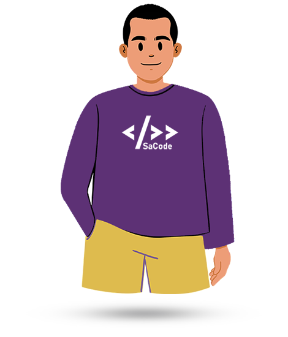
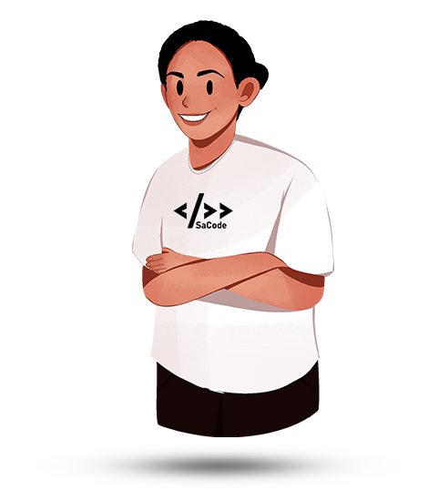
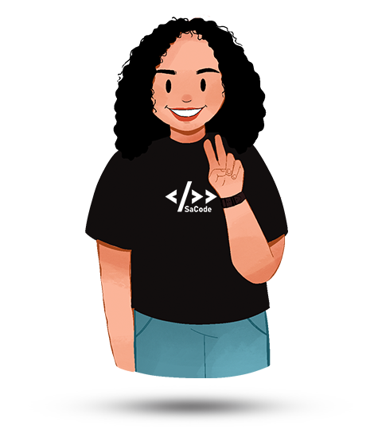
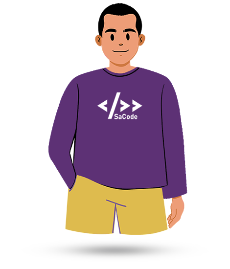
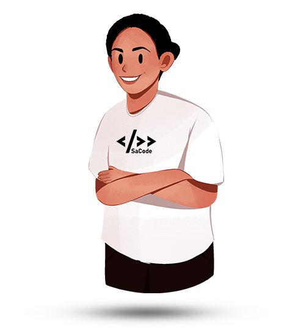
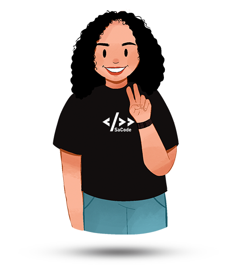
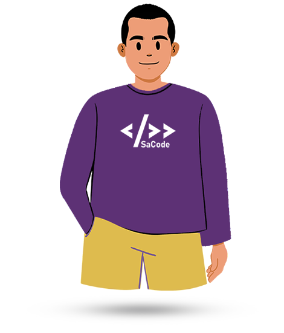
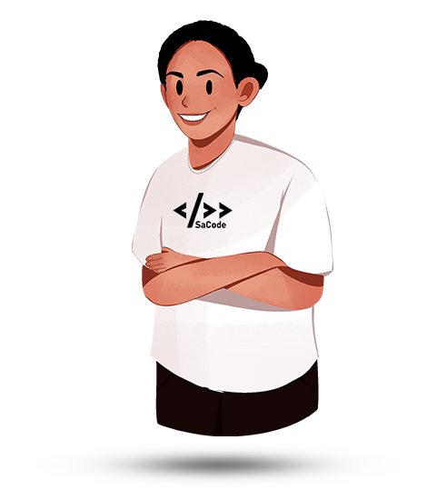
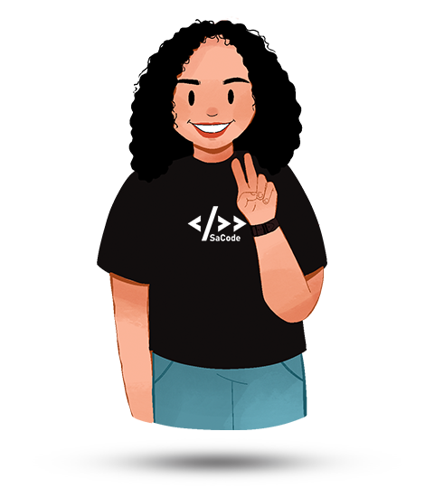

Belajar & Berbagi
Aktifitas dilaksanakan secara online dan offline. Anggota atau peserta yang dapat belajar dan berbagi pengetahuan bersama.
 





#PapuaCodingSchool #PapuaTechCommunity
Perkembangan teknologi di dunia saat ini mendorong anak-anak muda untuk turut berpartisipasi dalam penerapannya di berbagai sektor.
Siapa saja dapat belajar coding. Dengan pengetahuan tambahan ini, kapasitas pun dapat meningkat.
Studi di jenjang yang lebih tinggi, akan lebih mudah apabila ditopang dengan sumber belajar dan komuntas belajar yang mendukung.
Berbagai ide cemerlang dapat direalisasikan apabila pengetahuan dan kemampuan mencukupi. Ketika ide menjadi produk dan juga bermanfaat bagi penggunanya.
Perkembangan teknologi digital di dunia telah menciptakan banyak perubahan di berbagai bidang. Anak-anak muda diharapkan dapat mempersiapkan diri dengan pengetahuan dan skil yang cukup sehingga mampu berkontribusi bagi masyarakatnya.
| Belajar | Ciptakan | Bagikan |
|---|---|---|
| Menambah ilmu baru dan meningkatkan skil atau keterampilan pribadi. Mempersiapkan diri dengan pengalaman baru melalui diskusi dan studi kasus. | Bergabung dengan komunitas dan membentuk kelompok belajar. Mengerjakan studi kasus, membuat produk-produk digital dan membentuk portofolio pribadi. | Pengetahuan dan pengalaman dibagikan kepada sesama anggota komunitas tapi juga kepada masyarakat umum sebagai bentuk literasi digital. |
Aktifitas dilaksanakan secara online dan offline. Anggota atau peserta yang dapat belajar dan berbagi pengetahuan bersama.



SaCode merupakan komunitas teknologi informasi yang berbasis di Tanah Papua dan berikut ini video profil singkat.